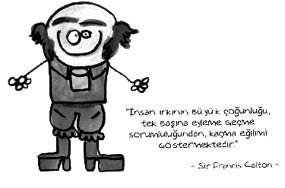

Sir Francis Galton (1822-1911)
Kraliçe Victoria döneminde yaşamış İngiliz bilim adamıdır. Darwin’in kuzeni olan bu şahsiyet dâhiliğin kalıtsal olduğunu kanıtlamaya çalışmış, “Bakın kuzenim de zeki, ben de zekiyim.” diyerek bu fikrini savunmuştur. “Her şeyi ölçen adam” olarak ünlenen Galton, parmak izini de keşfeden kişidir. “Bari idam mahkûmlarını asmak için gerekli olan ipin ölçüsünü de bulayım.” deyince idam mahkûmları tarafından boyunun ölçüsü alınmaktan son anda kurtulan Galton, bunun üzerine işin iyice suyunu çıkarıp öjenik kuramını ortaya atmıştır.
Bu fikir ilk kez Platon’un devletinde yaşlı ve sakatların öldürülmesi, iri yarı, sağlıklı koruyucu sınıfın yine iri yarı, sağlıklı kişilerle evlendirilmesi şeklinde ortaya atılmış fakat insan haklarına aykırı olduğu için Platon bile buna “ütopya” demiştir.
Galton, evrim teorisinin de etkisiyle, insandaki kalıtımla geçen özellikleri, farklı zihinsel yetenekleri ve kişisel karakteristikleri ölçerek bulmaya girişti. Öyle bir varsayımla hareket ediyordu ki, bireysel farklılıkları gösterebildiğinde, dolaylı olarak genetik etkeni de göstermiş olacağını düşünüyordu.
Bu amaçla pek çok deneyler yapmış, çalışmaları ve düşünceleri, arkasından gelen birçok kişiyi etkilemiştir.

Neymiş öjenik…
Öjenik, arzu edilen özelliklere sahip çiftlerin daha çok çocuk yapmasının özendirilmesi ya da arzu edilmeyen özelliklere sahip çiftlerin çocuk yapmasının önlenmesine dayanan genetik projenin adıdır.
Öjenik, Galton’un “iyi tür” anlamında eski Yunancadaki eugenics kelimesinden ürettiği bir isimdir.
20. yüzyılın ilk yarısında çok sayıda taraftar toplayan öjeni teorisine göre, nasıl sağlıklı hayvanlar birbirleriyle çiftleştirilerek iyi hayvan cinsleri oluşturuluyorsa, bir insan ırkı da ıslah edilebilirdi.
Öjeniyi Almanya’da ilk benimseyen ve yayan kişi, ünlü evrimci biyolog Earnst Haeckel oldu. Haeckel, Darwin’in yakın bir dostu ve destekçisiydi. Evrim teorisini desteklemek için, farklı canlıların embriyolarının birbirine benzediğini öne süren “rekapitülasyon” adlı iddiayı ortaya atmıştı. Haeckel’in bu iddiayı ortaya atarken çizim sahtekârlıkları yaptığı ise daha sonra anlaşıldı.
Haeckel 1919 yılında öldü. Ama fikirleri Nazilere miras kaldı. Adolf Hitler iktidara geldikten kısa bir süre sonra, resmi bir öjeni politikası başlattı. Alman toplumu içindeki akıl hastaları, sakatlar, doğuştan körler ve kalıtsal hastalıklara sahip olanlar, özel sterilizasyon merkezlerinde toplandılar. Bu kişilere, Alman ırkının saflığını ve evrimsel ilerleyişini bozan parazitler olarak bakılıyordu. Nitekim bir süre sonra toplumdan soyutlanan bu insanlar, Hitler’den gelen gizli bir talimata dayanılarak öldürülmeye başlandı.
Mussolini de İtalya’yı emperyalist ve faşist temeller üzerine oturtmak için aynı Sosyal Darwinist kavramlardan ve iddialardan faydalandı.1935 yılında Etiyopya’yı işgal ederek 1941 yılına kadar 15 bin insanı katlettirdi. Etiyopya işgalini, ırkçı görüşleriyle destekleyerek makul göstermekten de geri kalmadı. Mussolini’ye göre Etiyopyalılar siyah ırktan oldukları için aşağıydılar ve İtalyanlar gibi üstün bir ırk tarafından yönetilmek onlar için bir şeref olmalıydı.
1900’lü yıllarda Fransız hükümeti de, psikolog Alfred Binet’e zihinsel özürlü çocukları diğerlerinden ayırma görevi verdi.
Amerika’da ise evrimci ırkçı teorisyenlerin başında gelen Henry Fairfield Osborn, İnsan Irklarının Evrimi başlıklı bir makalesinde “Ortalama bir zencinin zekâ yaşı, Homo Sapiens türüne ait on bir yaşındaki bir çocuğun zekâsına ancak ulaşabilir.” diye yazıyordu.
Yine Amerika’nın İndiana eyaletinde 1907’de kabul edilen bir kanunla zekâ özürlü, sağır ya da körler zorla kısırlaştırılmaya başlandı. Benzer bir yasayı 1909’da Washington ve Kaliforniya eyaletleri de kabul etti. 1927’de de Virginia eyaletinde zekâ özürlüler yasa yoluyla kısırlaştırılmış ve bu yasa, Amerika’nın pek çok eyaletinde 1960’lara kadar yürürlükte kalmıştır.